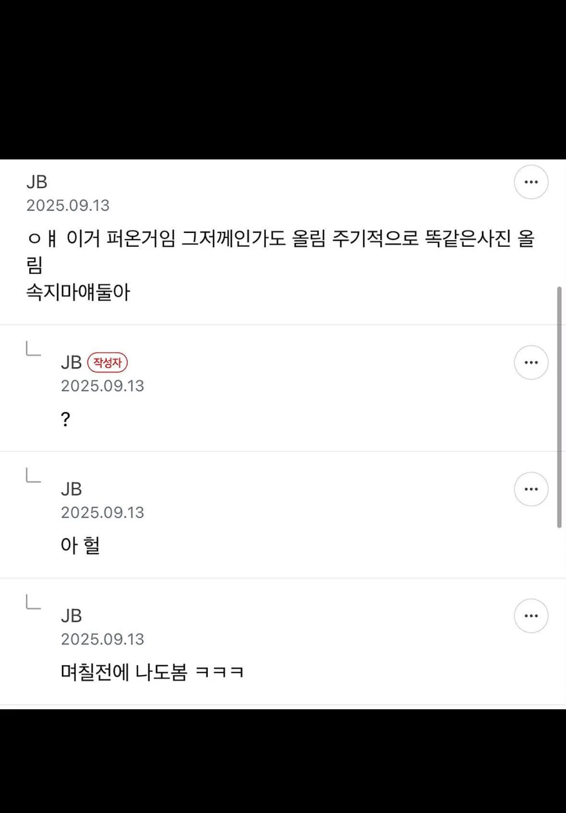
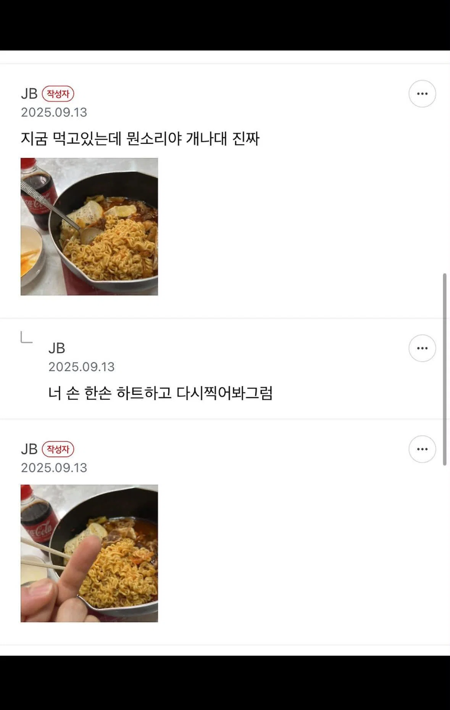
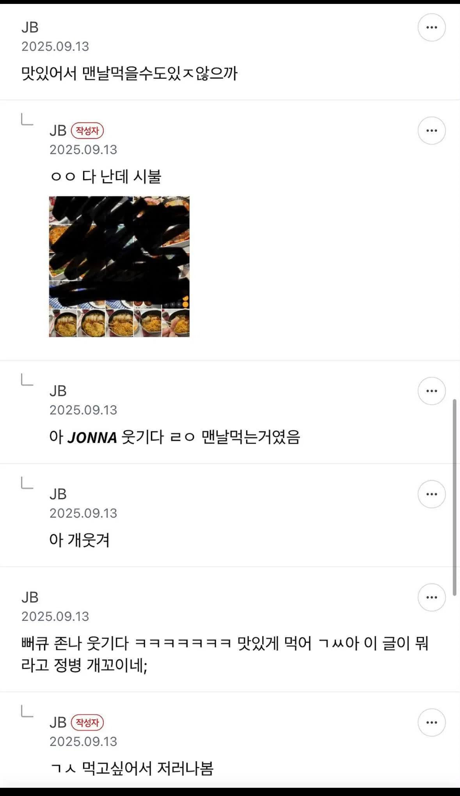

ㄹㅇ 감칠맛은 줄고 매운맛만 붕 떠 있는 느낌인데
열라면은 애초에 고추가루향 베이스라 그런지 맵기만 올려도 별 이질감이 없더라
순두부열라면 ㄹㅇ 맛있음 비엔나도 넣으면 더맛있음
아무리 맛있어도 어떻게 맨날맨날쳐먹냐고 ㅋㅋㅋㅋㅋㅋㅋ
킹리적갓심이 들맘하짘ㅋㅋ
먹어볼까
조금 자작하게 끓이면 맛있을것같음
ㅋㅋㅋㅋㅋㅋㅋㅋㅋㅋㅋㅋㅋㅋㅋㅋㅋㅋㅋㅋㅋ
군대있을 때 보급나와서 열라면만 400개 정도 먹었었다. 전혀 안물림.
요즘 신라면 너프가 심해서 열라면이 상대적으로 올라옴